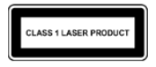

[關於手機] [安全和法規手冊]。
[關於手機] [安全和法規手冊]。在這份詳盡的指南中，除了包含 Pixel 4a (5G) 盒內隨附的紙本《安全與保固》手冊所提及的基本安全準則，還提供其他跟 Pixel 4a (5G) 相關的安全、保固與法規資訊。
如要查看安全、環境與法規資訊，請造訪 g.co/pixel/safety，或是依序前往「設定」應用程式 [關於手機] [安全和法規手冊]。
如要查看您的國家/地區適用的購物保固資訊 (包括保固申請方式)，請造訪 g.co/pixel/warranty。
如要查看裝置的電子法規標籤和電磁波能量比吸收率 (SAR) 值，請在裝置上依序前往「設定」應用程式 [關於手機] [法規標籤]。
如要查看完整的線上說明，請造訪 g.co/pixel/help。
 警告：使用裝置前，請詳閱以下健康與安全資訊，以降低人身傷害、身體不適、財物受損 (包括 Pixel 4a (5G) 受損) 和其他潛在危害的風險
警告：使用裝置前，請詳閱以下健康與安全資訊，以降低人身傷害、身體不適、財物受損 (包括 Pixel 4a (5G) 受損) 和其他潛在危害的風險
請謹慎操作 Pixel 4a (5G)。如果您拆解、摔落、折彎、燒灼、碾壓或刺穿裝置，可能會造成裝置或電池損壞。請勿使用外殼損壞 (包括螢幕破裂) 的 Pixel 4a (5G)。使用損壞的 Pixel 4a (5G) 可能會導致電池過熱或造成人身傷害。請讓 Pixel 4a (5G) 遠離液體，以免造成短路和過熱現象。萬一不慎弄濕 Pixel 4a (5G)，切勿使用外部熱源烘乾。
Pixel 4a (5G) 的運作環境溫度為攝氏 0° 到 35° (華氏 32° 到 95°)，存放環境溫度應為攝氏 -20° 到 45° (華氏 -4° 到 113°)。請勿將 Pixel 4a (5G) 放置在溫度可能會超過攝氏 45° (華氏 113°) 的地方 (例如車輛儀表板或暖氣孔附近)，否則可能會導致 Pixel 4a (5G) 受損、電池過熱或起火。Pixel 4a (5G) 應遠離熱源，並且避免受陽光直射。如果裝置過熱，請拔除裝置的電源 (如果已連接電源的話)，並將裝置移到溫度較低的地方，等到降溫之後再繼續使用。Pixel 4a (5G) 可在海拔高達 2,000 公尺 (6562 英尺) 的環境中正常運作。
在特定模式中 (例如玩遊戲、拍攝影片、使用手電筒設定或使用 VR) 操作 Pixel 4a (5G) 時，手機產生的熱度可能會比在一般運作環境中更高。這可能會導致 Pixel 4a (5G) 進入低耗電模式或暫時關機。在這些模式中操作手機時，請格外小心。
請勿嘗試自行修理 Pixel 4a (5G)。拆解裝置不但可能會導致裝置失去抗水作用或受損，您也可能因此受傷。
如果您的 Pixel 4a (5G) 無法正常運作或已經損壞，請與客服人員聯絡，並停止使用裝置。如需更多資訊，請前往 g.co/pixel/contact。
使用手機或進行充電時，請確保電源變壓器和 Pixel 4a (5G) 保持良好的通風狀態。使用損壞的充電線或電源變壓器，或是在有濕氣的環境中充電，可能會導致起火、觸電、人身傷害，也可能會造成 Pixel 4a (5G) 或其他財物受損。為 Pixel 4a (5G) 充電時，請務必將電源變壓器插入 Pixel 4a (5G) 附近方便拔插的插座。請避免在陽光直射處替裝置充電。
替手機充電時，請務必將電源變壓器插入裝置附近方便拔插的電源插座。將電源變壓器從電源插座拔除時，請手握變壓器，切勿拉扯充電線。請勿扭轉或擠壓充電線，或是將連接器硬塞進連接埠中。如果系統在充電時顯示訊息，指示您拔除充電中的裝置或電源變壓器，請將充電中的裝置或電源變壓器拔除。如要再次嘗試充電，請務必先確認充電線連接器和手機的充電埠完全乾燥且無異物。
為 Pixel 4a (5G) 充電時，請務必使用與 USB-C PD 相容的充電器 (例如裝置隨附的變壓器)，或是 Google 商店或 Google 授權經銷商販售的 USB-C 充電器 (請認明 Google 的「Made For」徽章)。充電時使用的 AC 變壓器必須通過 IEC 60950-1/62368-1 限功率電源輸出認證 (5 伏特直電流，最大 3 安培；9 伏特直電流，最大 2 安培；或前述兩者) 以及 CTIA 的「IEEE 1725 合規電池系統認證規範」。Pixel 4a (5G) 隨附這類合格變壓器。使用不相容的充電配件可能會導致起火、觸電、人身傷害，或是手機和配件受損。
Pixel 4a (5G) 和充電器在正常操作的情況下會發熱，且符合適用的表面溫度標準和限制。使用手機或進行充電時，請避免長時間讓皮膚直接或間接接觸熱燙的裝置表面，以免造成不適或灼傷。請勿躺臥在裝置或電源變壓器上，或在睡眠時將它們放在身邊，也不要用毯子或枕頭覆蓋住裝置或電源變壓器。如果您的身體狀態會影響皮膚感知熱度的能力，請務必留意這一點。
本裝置並非玩具。您的手機包含或隨附許多細微零件、塑膠、玻璃或金屬元件和銳利的零件，可能會造成孩童受傷或有窒息危險。隨附線材有可能導致兒童窒息。請將手機的線材置於兒童無法取得之處 (保持 1 公尺/3 英尺以上的距離)，並禁止兒童玩弄手機和隨附配件，以免他們弄傷自己或他人，或是不小心損壞手機。如果孩童誤食細微零件，請立即就醫。
 長時間暴露在高音量下 (包括音樂) 可能會造成聽力受損。為避免聽力受損，請避免長時間聆聽高音量的聲音。持續暴露在高音量和背景噪音中，可能會讓高音量聽起來比實際的音量小。使用耳機前請先確認音量大小。
長時間暴露在高音量下 (包括音樂) 可能會造成聽力受損。為避免聽力受損，請避免長時間聆聽高音量的聲音。持續暴露在高音量和背景噪音中，可能會讓高音量聽起來比實際的音量小。使用耳機前請先確認音量大小。
這款手機中的鋰離子充電電池是相當脆弱的元件，如果受損可能會導致人身傷害。請勿嘗試自行取出電池；如要更換電池，請與 Google 或 Google 授權的服務供應商聯絡。如需聯絡資訊，請前往 g.co/pixel/contact。由不合格的人員更換電池，可能會導致裝置受損。更換不當或使用不合格的電池可能會造成起火、爆炸、漏液或其他危險。請勿改造或重製/翻新電池，也不要刺穿電池或試圖將物體插入電池中，並避免讓電池受潮或浸於水或其他液體中。此外，請勿將電池置於火源、高熱和/或其他危險之中。請勿使電池短路，或讓金屬或導電物體接觸電池端子。請避免讓手機或電池掉落。手機或電池掉落 (特別是落在堅硬的表面上) 後，如果您懷疑或發現手機或電池有損傷，請與 Google 或 Google 授權服務供應商聯絡並要求進行檢查。電池漏液時，請勿讓流出的液體接觸眼睛、皮膚或衣物。如果滲漏的液體已接觸到眼睛，切勿用手搓揉，應立即以乾淨的水沖洗眼睛，並且就醫。
這款手機中的鋰離子充電電池符合 IEEE 1725 和其他適用標準。
請按照當地法規丟棄裝置、電池和配件，切勿以不當的方式運輸，或當做一般家庭垃圾處置。不當的棄置方式可能會造成起火、爆炸和/或其他危險。請勿強行拆解手機、碾壓手機、將手機加熱至超過攝氏 45° (華氏 113°) 或焚毀手機。想進一步瞭解如何回收手機，請前往 g.co/pixel/recycle。
為避免手機的零件或內部電路受到損害，請勿在多灰塵、多煙霧、潮濕或髒汙的環境或是磁場附近，使用或存放手機或其配件。手機應遠離熱源，且避免受陽光直射。切勿將手機放置在溫度可能會超過攝氏 45° (華氏 113°) 的地方 (例如車輛儀表板、窗台、暖氣孔附近，或是受到太陽或強烈紫外線長時間直射的玻璃後方)，否則可能會造成手機受損、電池過熱、裝置起火或爆炸。
請勿在儲存易燃物或爆裂物的地點 (例如加油站、油庫或化學工廠) 使用、存放或運輸手機，或為手機充電。請勿在以下場所使用本無線裝置：爆破作業區或潛藏爆炸風險的環境，例如空氣中含有高濃度易燃化學物、揮發氣體或粒子 (如顆粒、粉塵或金屬粉末) 的地區。在這類場所中，只要零星的火花就可能會引發爆炸或起火，造成人員傷亡。在可能發生這類危險的地點，請一律遵守所有相關的公告和標示。
您可以透過手機使用地圖和導航服務。地圖與導航功能必須搭配有效的數據連線和定位服務，但可能並非隨時都能正常運作，且在部分地區可能無法使用。地圖和路線指示可能不盡準確，實際狀況可能不同於系統顯示的地圖、資料、路況資訊、路線指示、相關內容和其他搜尋結果。請仔細查看路線指示，遵守所有適用的交通法規和標誌，並視情況運用常識自行判斷；您必須自行承擔使用地圖和導航服務的風險。您的行為及其所產生的後果一律須由您自行負責。使用 AR 導航功能時必須取得最新的 Google 街景服務圖像，且位於明亮的室外光源下。AR 導航功能不適用於印度地區。
在進行特定活動期間使用裝置，可能會分散您的注意力，也可能導致您或他人發生危險。為降低發生意外的風險，同時避免違反多數地區的法律，當您在開車、騎自行車、操作機器或從事其他可能導致嚴重後果的活動時，請勿使用裝置。請按照當地法律使用行動裝置、耳機和安全帽。
本裝置已通過審核，符合適用的無線電波接觸法規要求，不會超出適用的射頻 (RF) 能量排放限制。
針對將電磁波能量比吸收率 (SAR) 上限設在每一公克人體組織平均不得超過 1.6 瓦/公斤的國家/地區，當 G025E 型號裝置緊貼頭部使用時，最高 SAR 值為 1.20 瓦/公斤；在離人體 1 公分 (0.4 英寸) 的距離使用時，最高 SAR 值為 1.20 瓦/公斤。而 G6QU3 型號裝置在緊貼頭部使用時，最高 SAR 值為 1.20 瓦/公斤；在離人體 1 公分 (0.4 英寸) 的距離使用時，最高 SAR 值為 1.20 瓦/公斤。針對將電磁波能量比吸收率 (SAR) 上限設在每十公克人體組織平均不得超過 2.0 瓦/公斤的國家/地區，當本裝置類型緊貼頭部使用時，最高 SAR 值為 0.94 瓦/公斤；在離人體 5 公釐 (0.2 吋) 的距離使用時，最高 SAR 值為 1.40 瓦/公斤。
如要在 Pixel 4a (5G) 上查看各管轄區適用的 SAR 值規定，請依序前往「設定」應用程式 [關於手機] [法規標籤]。
如要降低射頻接觸量，請使用免持選項，例如內建的擴音模式、隨附的耳機或其他類似配件。請勿使用金屬製的裝置配件，例如裝置保護殼和保護套。裝置和身體之間距離必須符合規範。
如要查詢更多 SAR 的相關資訊，請造訪下列網站：
fcc.gov
icnirp.org
ec.europa.eu
dot.gov.in
請遵守禁止使用無線技術 (例如行動或 Wi-Fi 網路) 的規範。本裝置符合射頻輻射干擾的相關法規，不過使用任何無線裝置都有可能會對其他電子設備造成負面影響。舉例來說，搭乘飛機期間或即將登機時，請一律遵從航空公司的指示使用無線裝置。在飛機中使用無線裝置可能會干擾無線網路、影響飛行安全，或是違反相關法律。您或許可以在飛航模式下使用裝置。
無線裝置可能會無法用來進行緊急通訊。本裝置採用無線電訊號，在某些情況下可能會無法建立連線或保持連線狀態。本裝置的電源是由充電電池供應，可能會受到溫度、使用情況、裝置損壞和其他因素影響。雖然部分管轄區會透過無線網路傳輸緊急救援資訊，但視網路連線或其他因素而定，您的裝置可能無法隨時接收這類通訊。某些地區或語言可能無法使用部分功能、取得緊急救援資訊或進行緊急通訊。
本裝置使用的無線電和其他元件會散發電磁場，而且帶有磁性。這些電磁場和磁性會干擾心律調節器和其他植入式醫療裝置。心律調節器或其他植入式醫療裝置，應一律與手機和充電器保持安全距離。裝有心律調節器或其他植入式醫療裝置的使用者，如果對於使用或靠近您的 Google 裝置有疑慮，請先諮詢您的醫療服務提供者再使用手機。如果您認為您的手機對心律調節器或其他植入式醫療裝置產生干擾，請關閉您 Google 裝置的電源，並向您的醫生諮詢醫療裝置的相關資訊。
當您人在醫院、診所或健康照護設施時，如有指示要求您關閉無線裝置，請依照規定行事。這類要求的用意在於避免對敏感的醫療設備造成干擾。
您的手機與相關聯的健身應用程式功能並非為醫療用途所設計，相關資訊僅供參考。裝置與功能的設計不適用於診斷疾病或其他健康狀況，也不適用於治療、監控、緩解、處理或預防疾病或其他狀況。
少數使用者可能會因受到視覺刺激 (例如閃光燈或明亮的圖案) 而引發頭痛、癲癇發作或昏厥。就算是從未出現癲癇發作或昏厥狀況的使用者也可能會發生這些症狀。如果您有癲癇、昏厥或癲癇發作病史，或您認為可能受到手機影響的疾病，使用裝置前請先諮詢醫生。如果您發生了任何可能是由手機引起的症狀 (例如頭痛、昏厥或癲癇發作)，請立即停止使用手機並與醫生聯絡。
重複性的活動 (例如在手機螢幕上打字、輕觸或滑動) 可能會導致手指、手掌、手腕、手臂、肩膀或身體其他部位感到不適。如果您因這類活動而感到不適，請停止使用手機並諮詢醫生。
注意：根據 IEC 60825-1 第 3 版的規定，Pixel 4a (5G) 屬於第 1 級雷射產品。這項產品的設計同時採用了光學技術和防護外殼，因此您不會接觸到第 1 級以上的雷射輻射物。這項產品符合 21 CFR 1040.10 和 1040.11 的規定，但不符合 2019 年 5 月 8 日第 56 號雷射公告所述的 IEC 60825-1 第 3 版規定。如果您並未依照本文所述之正常程序來控制、調整或操作本款裝置，可能會暴露於危險性輻射中。
雷射裝置：Google LLC, 1600 Amphitheatre Parkway, Mountain View, CA 94043, USA。
請按照下列指南使用、存放、清潔或丟棄 Pixel 4a (5G)：
請勿在溫度低於攝氏 0° (華氏 32°) 或高於攝氏 35° (華氏 95°) 的環境中使用 Pixel 4a (5G) 或為 Pixel 4a (5G) 充電。如果裝置的內部溫度超過正常的運作環境溫度，裝置在嘗試調節溫度時，可能會有下列行為：降低效能和連線速度、無法充電，或者關閉螢幕或手機。裝置在調節溫度時，您可能無法使用裝置。建議您將裝置移到溫度較低 (或較高) 的地方，靜待幾分鐘後再嘗試使用。
在清潔裝置之前、雷雨期間或長時間不使用時，請拔除 Pixel 4a (5G) 電源和電源變壓器。請勿在充電期間清潔 Pixel 4a (5G)，以免造成人身傷害或裝置受損。請避開可能會讓產品表面受損的溶劑或磨料。
如果讓淺色 Pixel 4a (5G) 和保護殼接觸化妝品、化學物質或染色過的材質 (例如丹寧布)，可能會在手機和保護殼上留下汙漬。
如要清潔 Pixel 4a (5G) 上的髒污，建議您使用不起棉絮的軟布輕輕擦拭。如果想清除髒痕、汙漬或灰塵，請使用乾布。如果想清除化妝品或新牛仔褲等造成的染色，請使用微濕 (而非全濕) 布料。如有汙漬和塵垢，請使用螢幕清潔濕紙巾或眼鏡擦拭布清潔螢幕，並使用家事肥皂或不含漂白劑的清潔濕紙巾清潔背面和側邊。如需其他保養與清潔操作說明，請造訪 g.co/pixel/care。
如要為 Pixel 4a (5G) (包括螢幕) 殺菌，建議您使用居家殺菌濕紙巾或含有 70% 異丙醇的清潔濕紙巾。請勿使用含有漂白劑的清潔濕紙巾。
避免將含有磁力或對磁性敏感的任何媒體 (例如信用卡、銀行金融卡、錄音帶/錄影帶，或磁性記憶體裝置) 放在 Pixel 4a (5G) 或是其充電線附近，否則可能會遺失這些媒體中所儲存的資訊。任何媒體只要包含對磁性敏感的資訊，皆應與 Pixel 4a (5G) 保持至少 5 公分 (2 英寸) 的距離。
如要您的 Pixel 4a (5G) 需要維修，請務必交由 Google 或 Google 授權服務供應商處理。如果由未經授權的服務供應商修理或修改，可能會對裝置造成永久損害，以及影響您的保固範圍和法規授權。如要瞭解有哪些授權的服務供應商，請與客服人員聯絡。如需線上說明與支援服務，請造訪 g.co/pixel/help。如果您將手機送修，您可能會收到一支經過整新的替代手機 (用於取代原本的手機)。我們可能會使用整新品零件維修產品。維修或更換手機可能會導致使用者產生的資料遺失。
如要查看 Pixel 4a (5G) 適用的法規資訊、認證和法規遵循標示，請在 Pixel 4a (5G) 上依序前往「設定」應用程式 [關於手機] [法規標籤]。
重要事項：在搭配相容周邊裝置和有外膜包覆的傳輸線連接系統元件時，本裝置和電源變壓器均符合電磁相容性 (EMC) 的規定。請務必使用相容的周邊裝置和有外膜包覆的傳輸線連接系統元件，以降低無線電、電視和其他電子裝置受到干擾的機會。
注意：本設備已通過測試，符合美國聯邦通訊委員會 (FCC) 規章第 15 條中 B 類數位裝置的各項限制。這類限制旨在提供合理的保護措施，降低裝置安裝於住家環境時造成的有害干擾。本設備會產生、使用，並可能會散發射頻能量，若未按照相關指示安裝及使用，可能會對無線電通訊造成不良干擾。我們無法保證在特定安裝情況下不會產生干擾。您可以開啟及關閉設備電源，確認是否會對無線電或電視收訊造成有害干擾；若確實造成干擾，建議您採取下列一或多種措施來排除干擾：
未經 Google 明確允許而擅自變更或修改設備，可能會導致使用者喪失操作設備的權利。
本裝置符合 FCC 規章第 15 條的規定，運作時符合下列兩項條件：
型號：G025E、G6QU3
責任方：
Google LLC
1600 Amphitheatre Parkway
Mountain View, CA 94043, USA
g.co/pixel/support
Pixel 4a (5G) 已通過審核並獲得認證，符合 ANSI C63.19 技術規格的助聽器相容性規定。助聽器相容性有以下兩種評估標準：
M 評等：用於評估裝置射頻對聲耦合助聽器造成干擾的程度；
T 評等：用於評估與電感耦合 (電話線圈) 助聽器搭配使用的效果。
根據 FCC 對無線裝置所制定的助聽器相容性法規，Pixel 4a (5G) G025E 型號和 G6QU3 型號的評等皆為 M3/T4。
根據 FCC 規章，行動電話若獲 M3 或 M4 聲耦合評等，或是 T3 或 T4 電感耦合評等，即代表與助聽器相容。
經測試及評估，這款手機所採用的部分無線技術可與助聽器搭配使用。不過，手機中可能有某些較新的無線技術尚未經過測試，未必可與助聽器搭配使用。請務必在不同情境下，嘗試搭配您的助聽器或人工電子耳使用手機的各項功能，以便判別是否會聽到干擾音。請洽詢您的服務供應商或 Google，瞭解助聽器相容性的相關資訊。如果您有與退換貨政策相關的疑問，請洽詢您的服務供應商或手機零售商。
如要查詢美國地區的舊機回收相關資訊，請前往 g.co/pixel/recycle。
此 B 類數位裝置符合加拿大 CAN ICES-3 (B)/NMB-3(B) 規定
Cet appareil numérique de la classe B est conforme à la norme NMB-003 du Canada.
Pixel 4a (5G) 符合 IC 免許可證 RSS 標準。裝置運作時須符合下列兩項條件：
Le présent appareil est conforme aux CNR d'IC Canada applicables aux appareils radio exempts de licence. L'exploitation est autorisée aux deux conditions suivantes:
在 5150-5250 MHz 頻帶內運作的裝置僅限於室內使用，以降低對同頻道行動衛星系統造成任何有害干擾的風險。
Les dispositifs fonctionnant dans la bande de 5 150 à 5 250 MHz sont réservés uniquement pour une utilisation à l’intérieur afin de réduire les risques de brouillage préjudiciable aux systèmes de satellites mobiles utilisant les mêmes canaux.
 Google LLC 在此聲明，無線電設備類型 G025I 符合歐盟 2014/53/EU 指令 (無線電設備指令)。如要查看完整合法性聲明，請造訪 g.co/pixel/conformity。
Google LLC 在此聲明，無線電設備類型 G025I 符合歐盟 2014/53/EU 指令 (無線電設備指令)。如要查看完整合法性聲明，請造訪 g.co/pixel/conformity。
2014/53/EU 指令的限制與規範如下：
在下列國家/地區，裝置在 5150 到 5350 MHz 頻率範圍內運作時，僅限於室內使用：奧地利、比利時、保加利亞、賽普勒斯、捷克、德國、丹麥、愛沙尼亞、希臘、西班牙、芬蘭、法國、克羅埃西亞、匈牙利、愛爾蘭、義大利、立陶宛、盧森堡、拉脫維亞、馬爾他、荷蘭、波蘭、葡萄牙、羅馬尼亞、瑞典、斯洛維尼亞、斯洛伐克、英國、瑞士、冰島、列支敦斯登、挪威和土耳其。
這裡提供的數據是無線電設備在各頻帶中運作時，所發散出的最大射頻能量。
| 頻率 | 射頻能量 |
|---|---|
| Wi-Fi 2400-2483.5 MHz | 20 dBm |
| Wi-Fi 5150-5250 MHz | 23 dBm |
| Wi-Fi 5250-5350 MHz | 23 dBm |
| Wi-Fi 5470-5725 MHz | 23 dBm |
| WiFi 5725-5850 MHz | 14 dBm |
| 藍牙：2400-2483.5 MHz | 20 dBm |
| NFC 13.56 MHz | 0 dBuA/m |
| GSM 900 | 33.5 dBm |
| GSM 1800 | 31 dBm |
| UMTS Band I/VIII | 25.7 dBm |
| LTE：1、3、7、8、20、28、38、40、42 | 25.7 dBm |
| LTE：38 HPUE | 27.5 dBm |
| NR：n1、n3、n7、n8、n28、n40、n77、n78 | 25.7 dBm |
| NR：n78 HPUE | 26.5 dBm |
若是以未經授權的方式修改裝置或配件，或是改用或連接未經 Google 許可的傳輸線和設備，因而造成任何無線電或電視訊號干擾，Google 不承擔任何責任。使用者需負責修正這類未經授權的修改、替換或連接行為所造成的干擾。就使用者違反政府法規的行為，或因未遵循相關規定而造成的任何損害，Google 及其授權經銷商皆不負擔相關責任。
 此 WEEE 標誌代表根據當地法律及法規，本產品及其電池必須與家庭廢棄物分開棄置。本產品使用壽命結束時，請送至當地主管機關指定的回收站，以安全的方式處理或回收。為了維護自然資源、保護人類健康，同時為環保盡一份心力，請將本產品、其電子配件及其電池與家庭廢棄物分開收集並回收處理。
此 WEEE 標誌代表根據當地法律及法規，本產品及其電池必須與家庭廢棄物分開棄置。本產品使用壽命結束時，請送至當地主管機關指定的回收站，以安全的方式處理或回收。為了維護自然資源、保護人類健康，同時為環保盡一份心力，請將本產品、其電子配件及其電池與家庭廢棄物分開收集並回收處理。
本產品符合 2011 年 6 月 8日歐洲議會與歐洲理事會 2011/65/EU 指令及其修正案的規範，對於電子電機設備中特定有害物質 (RoHS) 之使用設有限制。
REACH (化學品註冊、評估、許可和限制法案，EC 編號 1907/2006) 是歐盟的化學物質規範架構。Google 遵守此規範的所有規定，致力為客戶提供產品內 REACH 高度關切物質 (SVHC) 的相關資訊。如要瞭解詳情，請來信至 Env-Compliance@google.com 與我們聯絡。
我們在歐盟的聯絡地址如下，如有法規相關的問題，歡迎來信洽詢：Google Commerce Limited, 70 Sir John Rogerson's Quay, Dublin 2, Ireland。
製造商：Google LLC 1600 Amphitheatre Parkway Mountain View, CA, USA 94043
進口商：Google Commerce Limited, 70 Sir John Rogerson’s Quay, Dublin 2, Ireland
在 5150 到 5350 MHz 頻率範圍內運作時，本裝置的 WLAN 功能僅限於室內使用，以降低對同頻道行動衛星系統造成任何有害干擾的風險。
如需客戶服務，請撥打 1-800-884-355。當您送修故障的手機時，Google 可能會以相同類型的整新品替換，而非維修。我們可能會使用整新品零件維修產品。如果產品會保留使用者產生的資料，進行維修或替換可能會導致資料遺失。
| 符合 IMDA 標準 DA107248 |
當裝置在 5GHz (W52/W53) 頻率運作時，僅限於室內使用 (透過高功率射頻進行通訊時除外)。
本手機屬於 B 類設備。雖然本設備可於居家環境使用，但使用時如果太接近無線電或電視接收器，可能會導致收訊不良。請按照操作手冊的指示使用本設備。
 VCCI-B
VCCI-B
無線射頻暴露
以 G025E 而言，SAR 標準值：2.0 W/kg，送測產品實測值：0.75 W/kg。
台灣法規遵循
使用過度恐傷害視力
減少電磁波影響，請妥適使用
經型式認證合格之低功率射頻電機，非經許可，公司、商號或使用者均不得擅自變更頻率、加大功率或變更原設計之特性及功能。
低功率射頻電機之使用不得影響飛航安全及干擾合法通信；經發現有干擾現象時，應立即停用，並改善至無干擾時方得繼續使用。
前項合法通信，指依電信法規定作業之無線電通信。低功率射頻電機須忍受合法通信或工業、科學及醫療用電波輻射性電機設備之干擾。
本裝置之使用應避免影響附近雷達系統之操作。
經過格式化的實際儲存空間容量會略減。
| Equipment Name: 18W USB-C Power Adapter, Type designation: G1000-US, TC G1000-US, TC G1001-US, GR4RC 設備名稱：交換式電源供應器，型號 (型式)：G1000-US、TC G1000-US、TC G1001-US、GR4RC |
|||||||
單元\ Unit |
限用物質及其化學符號 Restricted Substances and its chemical symbols |
||||||
| 鉛 Lead (Pb) |
汞 Mercury (Hg) |
鎘 Cadmium (Cd) |
六價鉻 Hexavalent chromium (Cr+6) |
多溴聯苯 Polybrominated biphenyls (PBB) |
多溴二苯醚 Polybrominated diphenyl ethers (PBDE) |
||
| 外殼 Enclosure | O | O | O | O | O | O | |
| 電子元件 Electronic Component |
— | O | O | O | O | O | |
| 連接器 Connector | — | O | O | O | O | O | |
| 電路板 PCB | O | O | O | O | O | O | |
| 變壓器 Transformer | O | O | O | O | O | O | |
| 塑膠件 Plastic Components |
O | O | O | O | O | O | |
| 包裝 Packaging | O | O | O | O | O | O | |
| 其它 Other | O | O | O | O | O | O | |
|
備考 1.「超出 0.1 wt %」及「超出 0.01 wt %」係指限用物質之百分比含量超出百分比含量基準值。 備考 2.「O」係指該項限用物質之百分比含量未超出百分比含量基準值。 備考3.「—」係指該項限用物質為排除項目。 |
|||||||
| Equipment Name: Pixel 4a (5G), Type designation: G025E 設備名稱：移動電話，型號 (型式)：G025E |
|||||||
單元\ Unit |
限用物質及其化學符號 Restricted Substances and its chemical symbols |
||||||
| 鉛 Lead (Pb) |
汞 Mercury (Hg) |
鎘 Cadmium (Cd) |
六價鉻 Hexavalent chromium (Cr+6) |
多溴聯苯 Polybrominated biphenyls (PBB) |
多溴二苯醚 Polybrominated diphenyl ethers (PBDE) |
||
| 外殼 Enclosure | O | O | O | O | O | O | |
| 電子元件 Electronic Component |
— | O | O | O | O | O | |
| 連接器 Connector | — | O | O | O | O | O | |
| 電路板 PCB | O | O | O | O | O | O | |
| 顯示 Display | O | O | O | O | O | O | |
| 電池 Battery | — | O | O | O | O | O | |
| 包裝 Packaging | O | O | O | O | O | O | |
| 其它 Other | O | O | O | O | O | O | |
|
備考 1.「超出 0.1 wt %」及「超出 0.01 wt %」係指限用物質之百分比含量超出百分比含量基準值。 備考 2.「O」係指該項限用物質之百分比含量未超出百分比含量基準值。 備考3.「—」係指該項限用物質為排除項目。 |
|||||||
如需查詢有限保固條款，請前往 Google 硬體保固中心。
Pixel、Google、G 標誌和其他相關符號及標誌均為 Google LLC 的商標。Wi-Fi® 和 Wi-Fi 標誌是 Wi-Fi Alliance 的商標。Bluetooth® 文字商標和標誌均為 Bluetooth SIG, Inc. 擁有的註冊商標。所有其他商標為其各自所屬擁有者的財產。